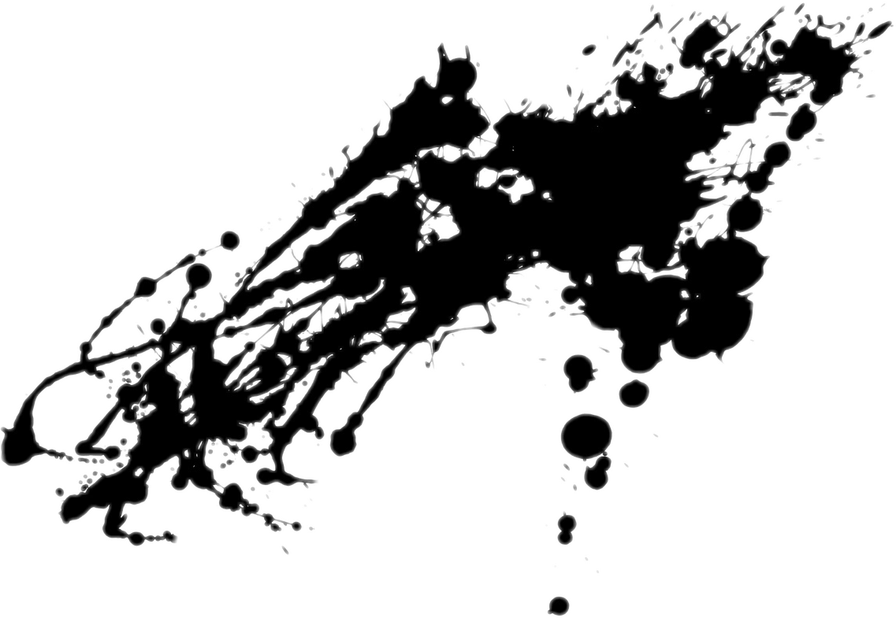
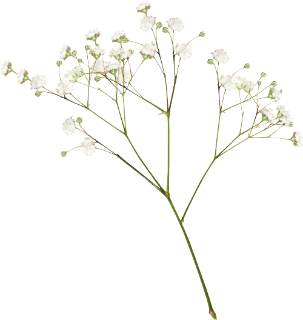

From Forest to Function
Shambhavi Singh
Builder • Researcher • Forest Dweller
Teliamura Reserved Forest
Tripura, India
Explore the Work ↓

From Forest to Function
Builder • Researcher • Forest Dweller
Teliamura Reserved Forest
Tripura, India



30 December 2025
My lab isn't in MIT's corridors. It's deep in Teliamura Reserved Forest—a BSF base where monkeys watch me code and monsoons test my internet.
8 projects deployed.
1 research paper published.
7 open source contributions merged.
Zero excuses made.
I don't wait for perfect conditions. I create despite imperfect ones.
This is where function meets forest.
This is where I build.
Engineering solutions for the modern frontier.
From real-time fact-checking protocols to low-bandwidth development environments, my work focuses on high-impact utility in adversarial conditions.
VIEW COLLECTION ↓